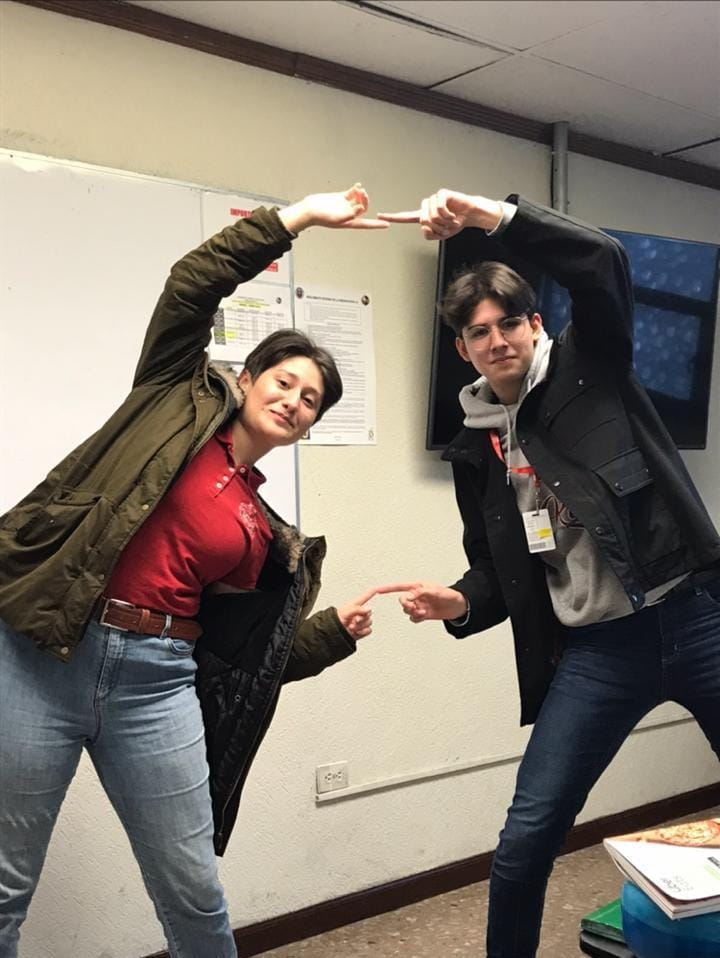
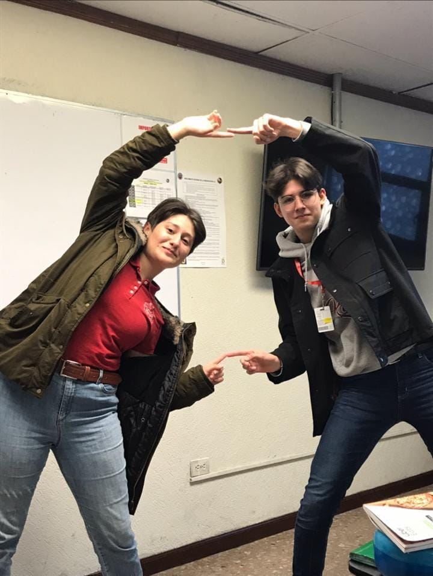

Emmanuel López Ojeda
Emmanuel López Ojeda nacio el 18 de septiembre del 2002 a las 3 de la
mañana en Monterrey N.L. Siempre le ha gustado hacer reír a la gente,
contando chistes o historias. Desde los 13 años descubrio su pasión
por la musica, ya que a esa edad le compraron una guitarra acustica.
Le gusta escuchar albumes en orden y componer musica con su banda
"EDISON" todo en mayúscula, con mucho estilo.
Empezo a programar muy tarde en su vida a los 18 años cuando se dio
cuenta que a eso se iba a dedicar toda su vida. Poco tiempo despues de
aprender descubrio que tambien el software era divertido y se ha
convertido en una gran parte de su vida, no solo como un trabajo, sino
como una manera de expresarse. Descubrio la tecnologia de Blockchain y
el mundo de la programacion web y se dijo a si mismo que algún día le
gustaria ser un desarrollador de Blockchain o un desarrollador web en
una gran empresa de Sillicon Valley. Tambien le gustaría tener su
propia empresa y vender software a grandes empresas, como su padre.
Emmanuel en varías ocasiones a vocalizado su deseo de viajar por el
mundo, especialmente visitar África y Asia, donde el cree que el
choque de culturas es extremadamente notorio.


 
